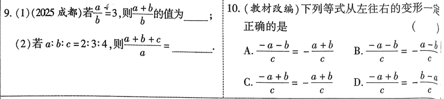
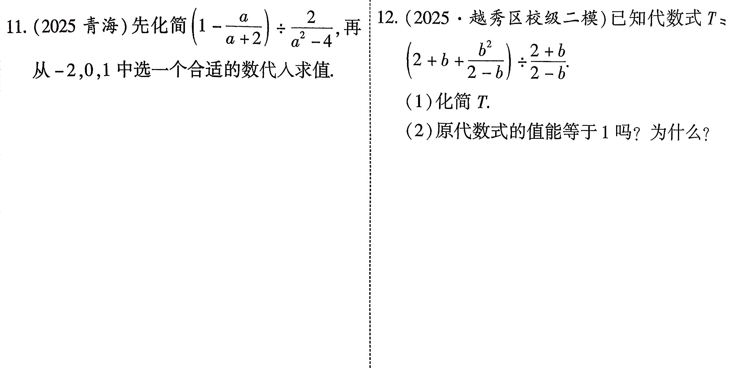

第4课 分式¶
知识点¶
知识点1¶
形如\(\frac{A}{B}\)(A,B是整式，B中含有字母，且\(B \neq 0\))的式子叫做分式
知识点2 分式常用条件¶
- 分式有意义的条件: 分母不为0
- 分式的值为0的条件：分子为0，分母不为0
知识点3 分式的基本性质与运算¶
- \(\frac{A}{B}=\frac{A\cdot M}{B\cdot M},\frac{A}{B}=\frac{A\div M}{B\div M}\)
- 分式乘法：\(\frac{a}{b}\cdot\frac{c}{d}=\frac{ac}{bd}\)
- 分式除法：\(\frac{a}{b} \div \frac{c}{d}=\frac{a}{b} \cdot \frac{d}{c}=\frac{ad}{bc}\)
- 分式加法：\(\frac{a}{c} \pm \frac{b}{c}=\frac{a \pm b}{c},\frac{a}{b} \pm \frac{c}{d}=\frac{ad \pm bc}{cd}\)
- 分式减法：\((\frac{a}{b})^2=\frac{a^n}{b^n}\)
知识点4 分式化简求值¶
- 将括号内的异分母分式通分为同分母分式，分子合并同类项，把括号去掉，简称去括号
- 将分式中除号(\(\div\))后面的除式分子分母颠掉，并把这个式子前的除号变成乘号，简称除式变乘式
- 计算分式乘法，将分式中的多项式因式分解再约去相同因式
- 最后按照式子顺序，从左到右计算分式加减法，直到化到最简为止
- 代数求值，代入使原分式有意义的数并计算
考点¶
考点1 分式有意义，分式值为0¶

考点2 分式的基本性质¶

考点3 分式的化简求值¶

考题¶